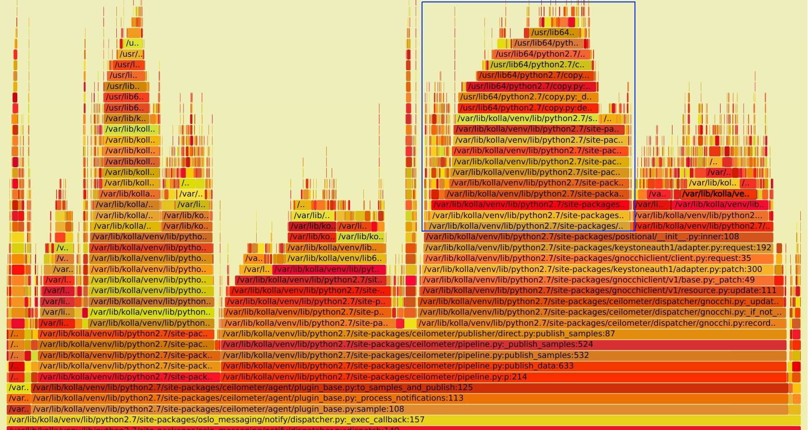

近期在一个 OpenStack 环境中，由于虚拟机个数达到5000以上，发现 ceilometer-agent-notification 服务 CPU 占用很高, 每个 process worker 就可以占用满一颗 CPU。但是消息处理速度超级慢，造成了 RabbitMQ 消息的大量积压。增加 ceilometer-agent-notificaion 进程个数或 worker 个数基本没有什么效果。感觉上应该是 ceilometer 本身代码有问题，所以有了这次分析。
对于性能分析，可以有以下几种方法。
- 静态分析： 对代码比较熟悉的话，可以通过直接翻代码的方式，猜可能的性能瓶颈点。去看代码逻辑。 辅助使用 timeit, cProfile 等模块，修改代码，增加检查点，打印单次的运行结果。看每个函数的的调用次数，来定位问题。
- 动态分析： 使用如 perf1, systemtap, 的动态性能分析工具，统计进程在一个时间段内的运行统计信息，再配和 FlagGraph 生成火焰图，来定位性能问题点。
对于后者，笔者之前看过一些书籍和文章，所以正好实践一下。对于 python 代码的情况，可以使用 pyflame2
pyflame 是 Uber 公司开源的用于生成 Python 程序火焰图的工具。
ceilometer 架构¶
ceilometer 架构经历过多次变化，已经简化成了如下图的结构。ceilometer 只有两个服务。ceilometer polling 服务负责从nova, swift, libvirt 等服务拉取相关数据，并发送到 MQ 里面的 notification.sample 队列。之后 ceilometer notification 从 MQ 中取到数据后，通过 pipeline.yml 的定义，进行数据转化后，再发给后面的 gnocchi api 进行存储。 这次的问题是出现在 ceilometer notification 进程。
+--------------------+
| Ceilometer Polling |
+---------+----------+
|
+======v========+
/ Message Queue /
+========+======+
|
+-----------v-------------+
| Ceilometer Notification |
+-----------+-------------+
|
+------v------+
| gnocchi api |
+-------------+
问题¶
当开启 16 worker 的情况下，MQ 的处理速度如下图。前面部分是优化前的，基本消息处理速度在 10/s，平均每个 worker 每秒连一个请求都处理不完 。(后部分上升是因为有几个worker 做了优化)

安装 pyflame 工具
yum install autoconf automake gcc-c++ git libtool python-devel make
git clone https://github.com/uber/pyflame.git
cd pyflame
./autogen.sh
./configure
make
命令会生成在 ./src/pyflame 位置
安装 FlameGraph4 工具
git clone https://github.com/brendangregg/FlameGraph.git
使用如下命令抓取数据
./src/pyflame -p <pid> -s 60 -r 0.01 > ceilometer-notification.pyflame
然后使用 FlameGraph 工具目录下的 flamegraph.pl 工具把 pyflame 数据生成火焰图
flamegraph.pl ceilometer-notification.pyflame > ceilometer-notification.svg
第一次抓取的图如下, 完整 SVG 见 notification_perf_before.svg：

看图上蓝框部分，可以看到 ceilometer 在处里完数据后，向gnocchi api 发送数据时，居然花了近 20% 的 CPU 时间在向 keystone 请求 endpoint 的地址，这明显是有问题，对于 endpoint ，一般来说是不会发生变化的，完全可以把他缓存在本地，而不是每次都向 keystone 请求。而且对于 ceilometer 服务来说，每个消息都请求一次 keystone 的话，也会对其造成很大的压力。
通过查看代码，最后定位到了 keystoneauth 的代码位置上，具体见 keystoneauth/keystoneauth1/session#L699-L711, 摘录如下：
if not urllib.parse.urlparse(url).netloc:
base_url = None
if endpoint_override:
base_url = endpoint_override % _StringFormatter(self, auth)
elif endpoint_filter:
base_url = self.get_endpoint(auth, allow=allow,
**endpoint_filter)
if not base_url:
raise exceptions.EndpointNotFound()
url = '%s/%s' % (base_url.rstrip('/'), url.lstrip('/'))
当上层传过来的 url 不包含 netloc 时(如 url=/v1/resource) ，而且没有配置 endpoint_override 就会从 keystone 里面重新拉取。而 ceilometer 里面的 gnocchi client 正好触发了 base_url = self.get_endpoint 逻辑， 从而重新获取了一次 endpoint。
定位到代码位置就好解决了，可以修改ceilometer 里面的代码，在创建 gnocchi client 时，传到 endpoint_override 参数, 相关修改已经提交社区，参见Pass gnocchi endpoint into adapter endpoint_override param3
打完以上 patch 后，重新抓取火焰图如下, SVG文件见notification_perf_after.svg

对比优化前, 右部分的在于已经不在调用 get_endpoint 接口。也就有了本文一开始的图，每秒的消息处理速度由 10/s 上升到了 40/s
后记¶
- pyflame 生成火焰图的方式来定位性能或代码问题还是很方便的。
- 估计 OpenStack 里面其它地方的代码也会有类似的问题，感觉更好的修复方式，是在 keystoneauth 里面自动缓存当前所有的 endpoints, 有需要的时候再刷新。
优化后，ceilometer-notification 处理消息时，还是会占用100% 的CPU, 主要原因从火焰图上看是对 json 的解析花掉了大量时间，进一步优化的话，可能需要换性能更好的 json 解析库或使用其它序列化方式。， 这里观察错了，这里是re.py模块的问题，进一步的分析见 ceilometer 性能分析 II
REF¶
原始链接:http://xcodest.me/ceilometer-performance-analysis.html
许可协议:"署名-非商用-相同方式共享 3.0" 转载请保留原文链接及作者。
Comments